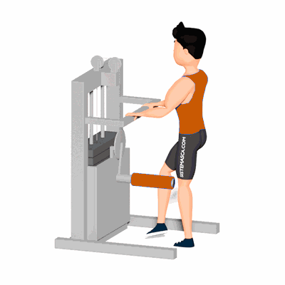

Adução no Apolete

Exercício para fortalecimento e hipertrofia dos músculos da coxa, com enfoque a região interna próximo a virilha. Trabalha os músculos adutor longo.
Ficha Técnica
Tipo: Musculação
Grupo Muscular: Perna
Aparelho: Nenhum
Músculos: Nenhum
Como realizar
- De frente para o aparelho, posicione o rolo na parte interna da perna na altura do joelho ou mais abaixo próximo ao tornozelo;
- A outra perna com o pé fixo ao solo;
- Com a posição ereta, realize a adução trazendo a perna próximo a outra e concentre o esforço no músculo interno da coxa trabalhado;
- Onde as pernas estarão próximas um a outra, manter a contração muscular por um instante;
- Retorne à posição inicial de forma controlada e repita os movimentos.
 RC STORE
RC STORE